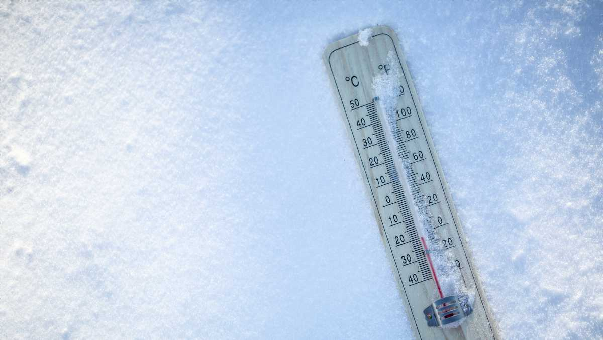

Cold Wave Survival Guide
Before
- Have adequate winter clothing. Multiple layers of clothing is also useful.
- Have emergency supplies ready.
During
- Stay indoors as much as possible, minimise travel to prevent exposure to cold wind.
- Keep dry. If wet,change clothes quickly to prevent loss of body heat.
- Prefer mittens over gloves; mittens provide more warmth and insulation from cold.
- Listen to radio, watch TV, read newspapers for weather updates.
- Drink hot drinks regularly.
- Don’t drink alcohol.It reduces your body temperature.
- Take care of elderly people and children.
- Store adequate water as pipes may freeze.
- Watch out for symptoms of frostbite like numbness, white or pale appearance on fingers, toes, ear lobes and the tip of the nose.
- Do not massage the frostbitten area.This can cause more damage.
- Put the areas affected by frostbite in warm — not hot — water (the temperature should be comfortable to touch for unaffected parts of the body).
- Do not ignore shivering. It is an important first sign that the body is losing heat and a signal to quickly return indoors.
IN THE CASE OF HYPOTHERMIA:
- Get the person into a warm place and change his/her clothes.
- Warm the person’s body with skin-to-skin contact, dry layers of blankets, clothes,towels, or sheets.
- Give warm drinks to help increase body temperature. Do not give alcohol.
- Seek medical attention if the condition worsens.